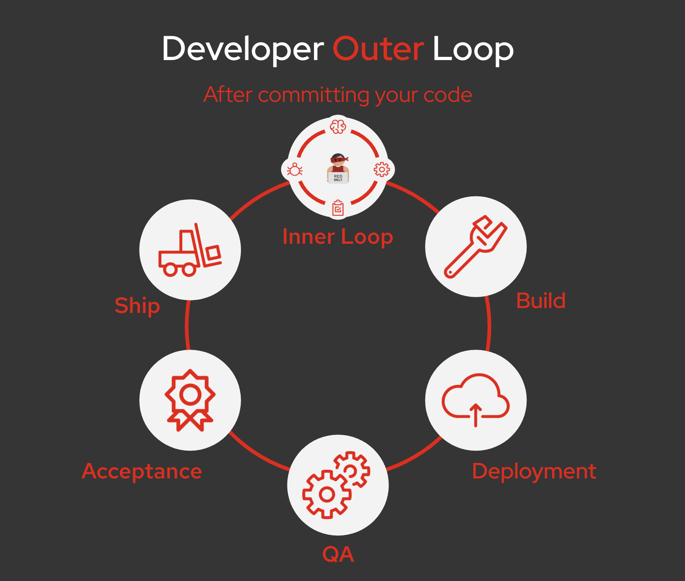

Welcome to Outer Loop Workshop
Ready to become a Cloud Native Developer?
This immersive workshop will put you in the Cloud Native world as a Developer: Promote applications to the different environments (QA, staging and production) on OpenShift using rich and advanced development services.

The goal of this hands-workshop is to provide a Developer Experience through the Outer Loop using Cloud Native Technologies.
To be a part of this journey, all you need is to come your modern web browser. Everything else is running on the Cloud, on OpenShift